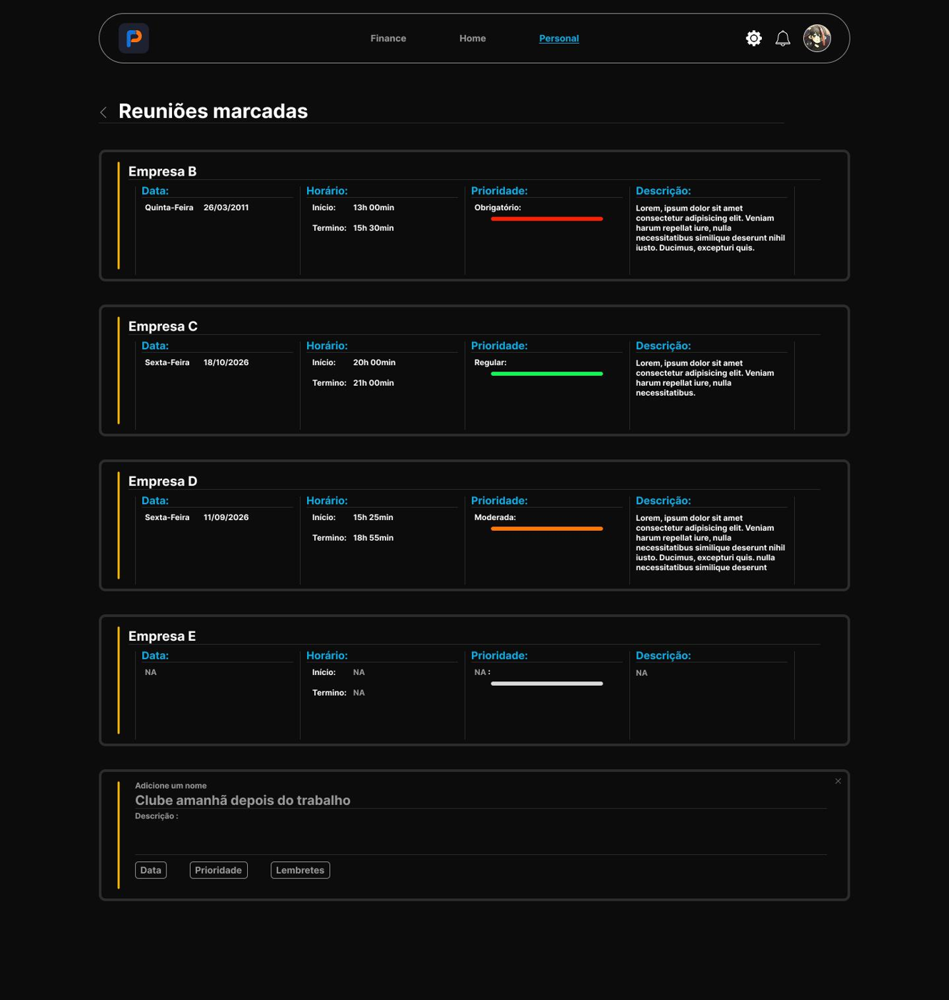
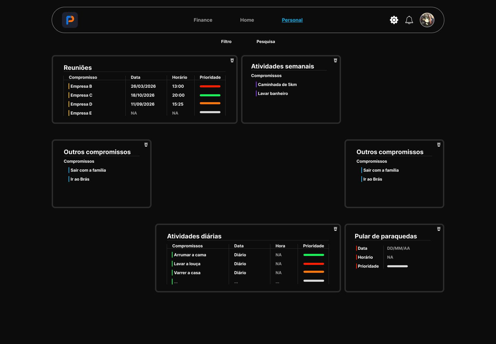
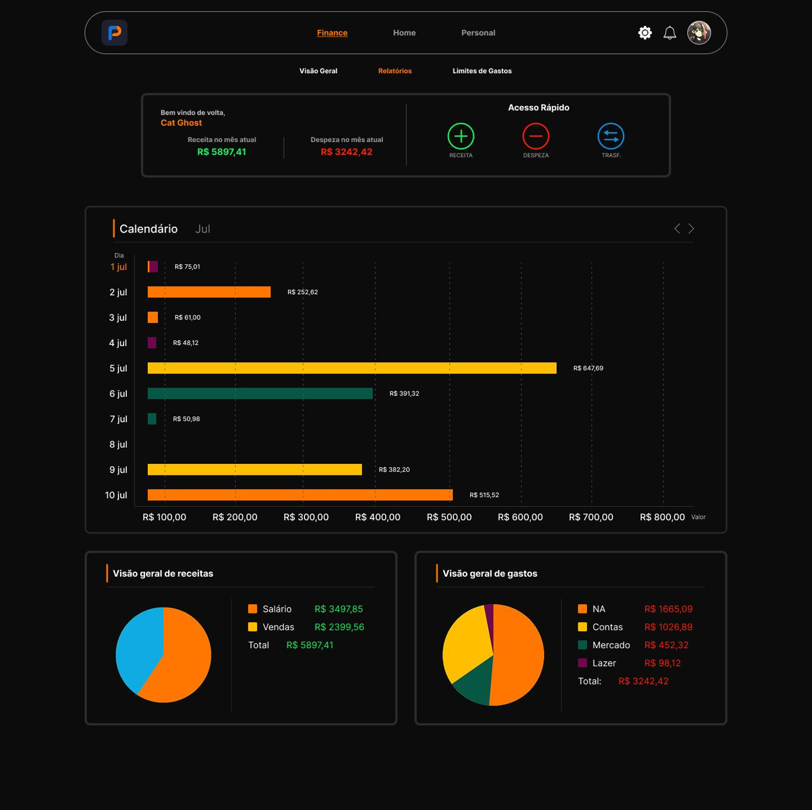

Receba alertas antes dos prazos importantes, sem esquecer nenhum compromisso.
Centralize tarefas pessoais e profissionais em um só lugar, priorizadas por você.
Suas tarefas sempre atualizadas, em qualquer dispositivo que você usar.
Adicione, edite e conclua tarefas em poucos toques, sem complicação.
Acompanhe contas, receitas e despesas organizadas por categoria em tempo real.
Gráficos mostram exatamente para onde seu dinheiro está indo.
Defina limites de gasto por categoria e receba alertas quando estiver perto.
Conecte suas contas em um único painel.

Segunda-feira, 9h. Antes mesmo de você abrir a agenda, o Prumo já lembrou da reunião com a Empresa B. Suas atividades do dia estão ali, organizadas por prioridade e cor, e o que é diário, semanal ou compromisso avulso fica cada um no seu lugar. Você adiciona, edita e conclui tarefas em poucos toques, e tudo se mantém atualizado em qualquer dispositivo. Menos tempo lembrando, mais tempo fazendo.
Fim do dia. Você abre o Prumo e vê que o Lazer já chegou a 80% do limite que você mesmo definiu para o mês. Sem susto e sem planilha: um alerta, uma redistribuição rápida entre categorias e o orçamento segue no eixo. Suas contas, receitas e despesas ficam num único painel, e os gráficos mostram exatamente para onde seu dinheiro está indo.

Sim. Durante a fase Alpha, todas as funções disponíveis podem ser usadas sem custo e sem cartão de crédito.
Seus dados ficam protegidos por criptografia e você controla o que é salvo. Nunca pedimos a senha do seu banco.
Pode. Suas tarefas e contas se atualizam em todos os dispositivos em que você entrar.
Não. Você registra receitas e despesas em poucos toques e o Prumo organiza o resto em gráficos simples.